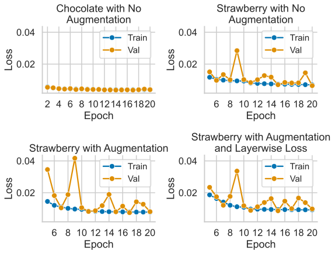
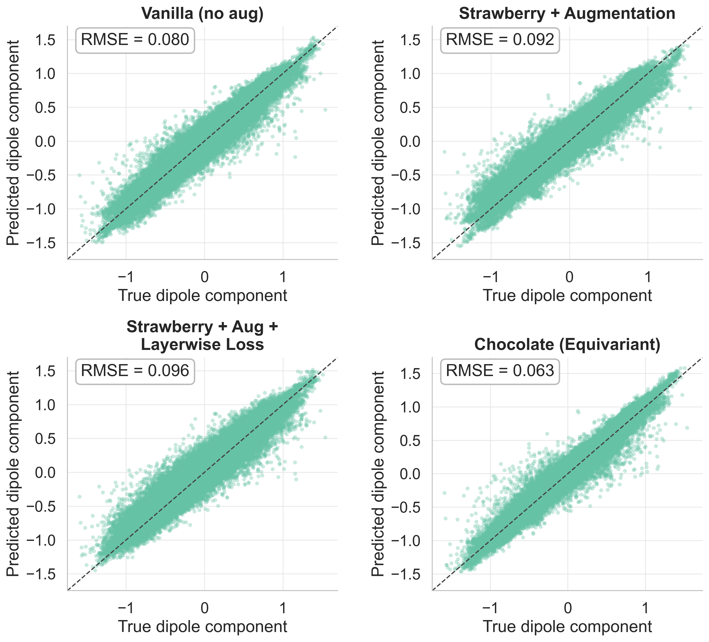
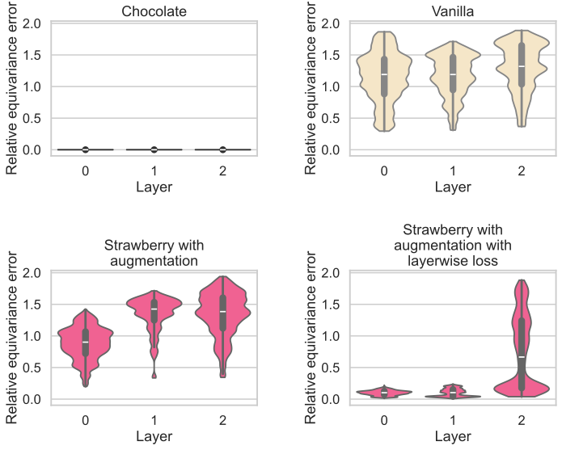
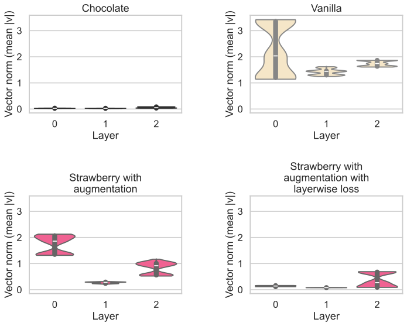

| A deeper look into equivariance for molecular data | |||
| Timothy Pinkhassik | Almira Nurlanova | ||
| Final project for 6.7960, MIT | |||
| A deeper look into equivariance for molecular data | |||
| Timothy Pinkhassik | Almira Nurlanova | ||
| Final project for 6.7960, MIT | |||
A molecule's response to light helps verify its synthesis and predict its reactivity. Understanding what this response looks like for new molecules, such as a drug candidate, can thus be an extremely powerful tool for chemists. Unfortunately, while we have differential equations that can be used to compute its behavior, finding the terms of this equation apriori require extensive quantum simulations that are computationally prohibitive for important applications such as high-throughput drug screening. In this work, we built on equivariant physics-informed models by creating three models to predict the leading term for this equation, called the dipole. We aimed to show that geometric regularization can steer the latent representation toward the correct physical symmetries and improve generalizability, though we uncovered a potential pitfall when objectives that pull the model towards equivariance can pull it away from accurate prediction. Our contributions present an important next step in the path towards computationally tractable, generalizable, and scalable molecular property prediction.
A Graph Neural Network is one of the most suitable architectures to represent molecular data, where a node corresponds to an atom and an edge corresponds to a chemical bond. Because of this structural alignment, GNNs are the primary model architecture used for molecular property prediction, organic retrosynthesis, and protein-ligand binding. However, classic GNNs do not inherently guarantee one of the central properties of molecules - rotational and translational (SE(3)) equivariance.
To address this limitation, a number of architectures with built-in equivariance have been designed, such as PaiNN [1], SchNet [2], EGNN [3]. Despite achieving better performance and more meaningful and accurate physical representation, built-in equivariant GNNs are computationally expensive, especially when algorithms rely on spherical harmonics or per-edge vector updates [4], [5].
To investigate our hypothesis, we designed a set of models to predict the dipole moment of small molecules from QM7-X dataset [6]. Dipole moment prediction is a particularly suitable benchmark as it is a vector quantity; as a molecule gets rotated, the model output should rotate in the same exact direction while retaining magnitude. The dipole moment is essential in determining how charge is spread out in a molecule, which defines polarity and influences properties like membrane permeability and solubility. A high quality model can help avoid running computationally expensive Density Functional Theory (DFT) calculations and is key to predicting how a molecule will absorb infrared light.
Our central hypothesis is: A non-equivariant GNN trained with additional rotational augmentation and a penalty for non-equivariant latent representations can approximate SO(3) equivariance, and our latent non-equivariance penalty will help push the model towards equivariance approximation faster.
To evaluate the effectiveness of equivariance learning we compared these three cases:
Let's define invariance and equivariance. Suppose we have a function f and a transformation g. Then f is invariant to g if
and f is equivariant to g if
In our case, we treat a molecule as a tuple :
Here, is the set of nodes (atoms), is the set of edges (we treat the molecule as a point cloud so there are directed edges), are node labels (atomic identities), are 3D coordinates of atoms, and is the dipole moment vector.
We used a rigid-body transformation consisting of a rotation (a zero-vector as translational component), therefore our tuple could be expressed as follows after rotation:
Keep in mind that since 3D coordinates and dipole moment are 3D vector quantities, we need to make sure that ground truth dipole moment gets rotated as well as the input molecule as you can see above.
For a simple prediction task on molecular data sensitive to 3D geometry, we chose to predict the vector molecular dipole moment for small molecules from the QM7-x dataset. This dataset contains approximately 7,000 small molecules with up to 7 "heavy" (non-hydrogen) atoms each, in various conformations. We treated each molecule as a point cloud with labeled atom types. The coordinates of molecules in QM7x are centered, as are coordinates of other computational datasets. For computational tractability, we restricted our analysis to SO(3) equivariance instead of the more popular E(3) objective, which avoided the necessity of augmenting data with translations and simplified evaluation. We expect the conclusions found from an analysis of SO(3) equivariance to be transferrable to other symmetries.
For each structure with atoms, we built all directed edges where . Each node was featurized with a learned scalar embedding of the atom type from the set (H, C, N, O, F, P, S, Cl). Each edge was featurized with the distance between atoms and . We split the dataset into training, validation, and test sets with 80%, 10%, and 10% of molecules, respectively, ensuring that different conformations of the same molecule were all in the same split. For tractability in training, we randomly downsampled the training set to 200 conformers per molecule.
A single layer of Chocolate maps
Given a node with adjacent node , the layer computes:
The equivariance of this model is guaranteed by the use of relative position vectors . Because these vectors depend only on the relative positions of atoms, they rotate consistently with any transformation from SO(3).
Strawberry and Vanilla, however, use a slightly different layer architecture. As input, instead of zero initialization, as is used in Chocolate, information about the molecular geometry is given through using atomic position vectors as the vector features of the first layer:
Where, as before, is the hidden dimension. A single layer of Strawberry:
To encourage Strawberry to be equivariant, we had the model output a list of the intermediate vector features as well as the final vector dipole prediction. During training with data augmentation, we examined the effect of adding an extra loss term that penalized non-equivariant representations of intermediate vector features in Strawberry:
Adding this loss term is tantamount to adding an extra objective. To avoid the model getting stuck in a local minimum by predicting a trivial dipole (the zero vector) that perfectly satisfies equivariance, we scale this additional loss term by a hyperparameter λ. For future implementations of such a layerwise loss, we will perform a hyperparameter search to find optimal values of λ. Non-equivariant models with sufficient expressivity and information about geometry are known to be capable of learning equivariance. This both follows from universal approximation and has been shown in applications. [11, 12]. To evaluate whether Strawberry was able to converge to equivariance with normal, data-augmented, and our layerwise loss regimes, we calculated the equivariance error of the predicted dipoles and the latent vector representations over a random sample of molecules with 4 rotations applied to them.
Our goal was to evaluate whether Strawberry, a non-equivariant GNN, could get approximate rotational equivariance through two mechanisms: rotational data augmentation and per-layer equivariance penalties. We compared these variants against Chocolate, a model with built-in equivariant architecture. The combined results suggest that while augmentation encourages some degree of equivariance, naïvely applying an MSE-based equivariance regularizer introduces optimization instabilities that degrade predictive accuracy. We evaluated all models on dipole prediction for the QM7-X test set:
| Model | MSE | RMSE |
|---|---|---|
| Chocolate | 0.0044 | 0.0670 |
| Vanilla | 0.0071 | 0.0840 |
| Strawberry with Augmentation | 0.0090 | 0.0950 |
| Strawberry with Augmentation and Layerwise Losses | 0.0097 | 0.0982 |
While none of the models reached state-of-the-art performance, all models achieved some predictive accuracy. As expected, Chocolate achieved the best RMSE, however, Vanilla performed surprisingly well relative to Strawberry with augmentation. We were surprised to see that the per-layer equivariance loss further degraded RMSE, suggesting that simple MSE regularizer may have encouraged latent collapse instead of learning equivariance.
Training and validation trajectories reveal how each training schedule affects optimization:
These patterns suggest that the intermediate per-layer losses significantly complicate optimization. A lower learning rate and longer training horizon, combined with smaller batches, may help stabilize training in future work.
To visualize predictive performance, we plotted predicted versus ground-truth dipole components for all model variants (Fig. 4). The Chocolate model produces the tightest clustering around the identity line, consistent with its lowest RMSE and built-in equivariance. Both Vanilla and Strawberry + augmentation show broader scatter, indicating less stable vector predictions. Adding layerwise equivariance losses worsens the spread further, reflecting the degradation in accuracy observed in the quantitative metrics. Overall, these plots reinforce that the simple equivariance penalty does not translate into improved dipole prediction and can even destabilize the learned vector representations.
To quantify how well each model learned rotationally stable representations, we computed the equivariance error of each latent vector over 64 SO(3) rotations sampled using a Superfibonacci grid and plotted distributions as violin plots.
As seen from violin grins, Chocolate demonstrates near-perfect equivariance at all layers. Vanilla and Strawberry with augmentation show similar distributions with substantial equivariance error, though augmentation slightly improves stability in early layers. Unexpectedly, strawberry + augmentation + layerwise losses show dramatic improvement at layer 0 and 1, but layer 2 exhibits persistent high error, contrary to the desired effect of the regularizer. This failure mode is strongly suggestive of representational collapse in the earlier layers, which prompted us to examine mean vector norms.
Vector Norm Analysis
As expected, Chocolate, which has an equivariant structure, has equivariance errors on the order of floating point noise. Vanilla and Strawberry with augmentation have comparable equivariance losses, with Strawberry having slightly lower errors. Unexpectedly, the equivariance regularizer seemed to work on the first two layers Strawberry when added, but it mostly failed on the last layer. We plotted the vector norms, and the clear difference between the mean vector norms for the first two and last layer indicate that the layerwise loss encouraged Strawberry to collapse representations. For future implementations, we believe that normalizing the simple MSE objective may help to solve this collapsing norm problem.
Our results show that while rotational augmentation provides a weak equivariance prior, it does not approach the stability or accuracy of an equivariant architecture like Chocolate. More notably, introducing per-layer equivariance penalties in Strawberry leads to a failure mode: representations in early layers collapse, yielding low equivariance error only because the latent vectors shrink toward zero. This phenomenon appeared consistently across seeds and training attempts, indicating that it is not an artifact of specific hyperparameters but a structural issue with the regularizer.
Because our experiments were constrained by compute and time, we did not perform systematic sweeps over λ, augmentation multiplicity, hidden size, or model depth. Therefore, our study should be viewed as evaluating a single point in a larger design space. Nonetheless, the emergence of latent collapse is itself an informative result—it implies that naïve equivariance penalties may be fundamentally incompatible with non-equivariant message-passing networks unless carefully normalized or re-designed.
Training models to approximately understand physics constraints through data augmentation and equivariance regularization is an active area of research. Our work demonstrates that geometric regularization of a model's latent representation can be implemented with very simple terms, customizable to any symmetry of interest. We also demonstrated, however, that these regularizations can be harmful to a model's quality when a push towards a desired physical constraint is in local tension with the prediction task. While not needing the same amount of hard-coded structure as a hard imposition of equivariance upon a model, this tension must be recognized and mitigated.